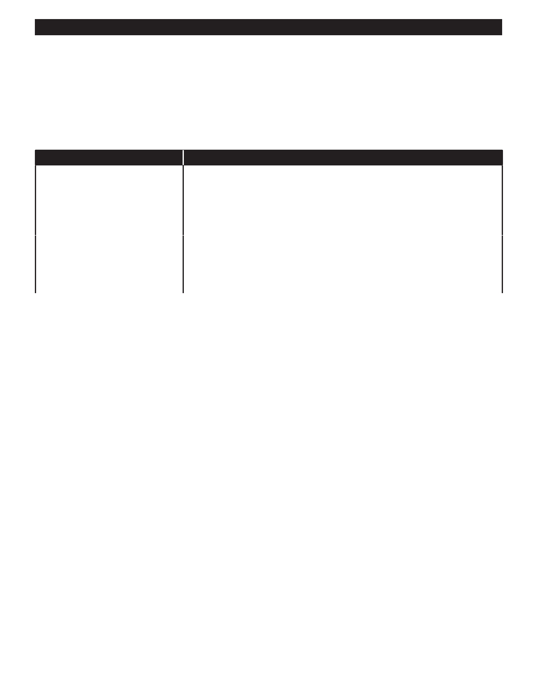

PA RT I C I PA N T R E S O U R C E G U I D E
How-to Steps: Testing a Built-in Switch
If the switch needs to be tested, remove the fixture (see page 60) and then:
1. Unscrew the switch.
2. Label the wires so you can put them back the same way.
3. Remove the switch and its attached wires.
4. Use a continuity tester or multimeter to test the switch.
If You Use…
Then Follow These Steps…
A continuity tester
1. Attach the clip of the tester to one of the switch wires.
2. Touch the probe to the other lead.
3. Turn the switch on and off.
4. Check the tester light. The switch is good if the tester lights in one position, but
not both.
A multimeter
1. Set the meter to R X 1.
2. Touch one probe to one of the switch wires, and the other to the other lead.
3. Turn the switch from OFF to ON.
4. Check the meter. If the reading goes from infinity to zero, the switch is good
How-to Steps: Replacing a Built-in Switch
If your test shows that the switch needs to be replaced, then:
1. Replace the switch in the fixture.
2. Reattach the light fixture.
3. Return power to the light fixture and test the switch to make sure it works.
Notes:
63